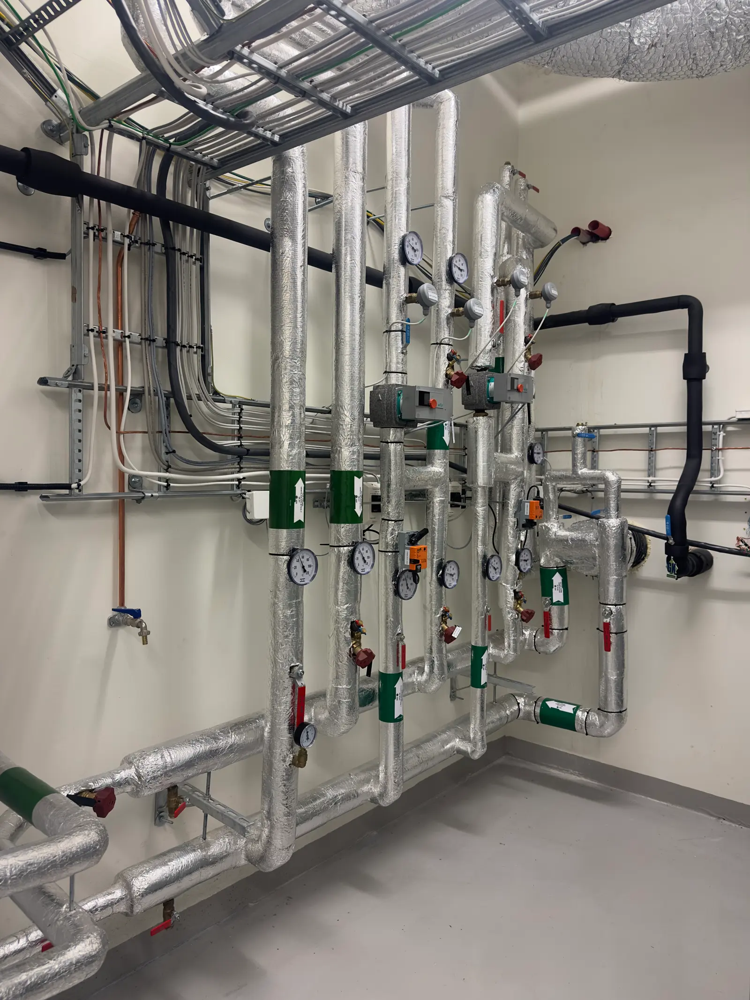

L’exigence de l’artisan pour vos sanitaires et chauffage.
Plomberie, chauffage & pompe à chaleur à La Vallée. Un point de départ clair pour vos travaux : décrivez votre besoin et préparez votre échange.
Un projet de rénovation ou d’installation ? Commençons par votre besoin.

garanti
au quotidien
Partons de ce dont
vous avez besoin.
Choisissez votre sujet pour préparer une demande précise. Le périmètre des travaux sera confirmé avec l’artisan.
Pompe à chaleur
Présentez votre logement et votre besoin. Le projet se précise lors d’un échange avec l’artisan.
Préparer ma demande ↗La ValléeChaudière condensation
Présentez votre logement et votre besoin. Le projet se précise lors d’un échange avec l’artisan.
Préparer ma demande ↗La ValléeChauffe-eau thermodynamique
Présentez votre logement et votre besoin. Le projet se précise lors d’un échange avec l’artisan.
Préparer ma demande ↗La ValléePlomberie sanitaire
Présentez votre logement et votre besoin. Le projet se précise lors d’un échange avec l’artisan.
Préparer ma demande ↗Du premier échange
au projet défini.
Le bon équipement dépend de votre habitation et de vos usages. Préparez ces informations pour discuter des possibilités.
Décrire mon projet ↗Vous décrivez votre besoin
Votre commune, le logement concerné et ce que vous souhaitez installer ou remplacer.
Vous échangez avec l’artisan
Les contraintes techniques, l’existant et les prochaines étapes se précisent ensemble.
Vous examinez la proposition
Le périmètre, le prix et le calendrier sont à confirmer avant tout engagement.

Votre besoin mérite
un échange.
Précisez les premières informations utiles. Pour joindre directement Courpron Pascal, appelez le numéro ci-dessous.
05 4 6 95 0 1 96 ↗15 RUE DES ALBERTS, 17250 La Vallée
Préparer ma demande
Ce formulaire est une démonstration : le récapitulatif reste affiché sur cette page, sans envoi ni stockage.
Votre récapitulatif est prêt
Aucun message n’a été envoyé. Vous pouvez utiliser ces informations lors de votre appel.